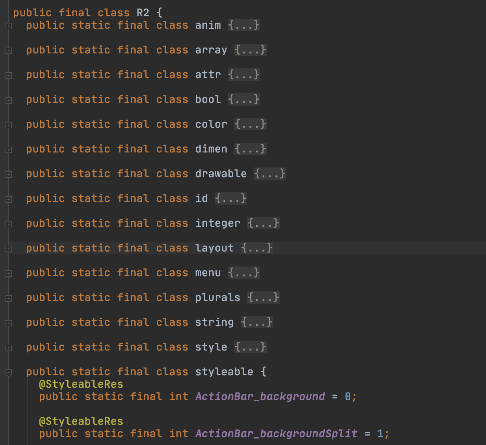

写在最前面
上一篇我们分析了，反射来实现 ButterKnife。那么这一篇，我们就来正式分析 ButterKnife 的相关库，先从 Gradle Plugin 这个库开始。
项目结构
.
├── build.gradle
├── butterknife-gradle-plugin.iml
├── gradle.properties
└── src
├── main
│ ├── java
│ │ └── butterknife
│ │ └── plugin
│ │ ├── ButterKnifePlugin.kt
│ │ ├── FinalRClassBuilder.kt
│ │ ├── R2Generator.kt
│ │ └── ResourceSymbolListReader.kt
│ └── resources
│ └── META-INF
│ └── gradle-plugins
│ └── com.jakewharton.butterknife.properties
└── test
整个项目的结构非常清晰，4个文件。这里就直接说明了，这个库的作用就是用于生成library库的R2文件。
好的 我们简单来分析下，对于 library 是怎样的一个操作。
源码分析
ButterKnifePlugin
.properties 文件定义了相应的 Plugin 类ButterKnifePlugin
class ButterKnifePlugin : Plugin<Project> {
override fun apply(project: Project) {
project.plugins.all {
when (it) {
is FeaturePlugin -> {
project.extensions[FeatureExtension::class].run {
configureR2Generation(project, featureVariants)
configureR2Generation(project, libraryVariants)
}
}
is LibraryPlugin -> {
project.extensions[LibraryExtension::class].run {
configureR2Generation(project, libraryVariants)
}
}
is AppPlugin -> {
project.extensions[AppExtension::class].run {
configureR2Generation(project, applicationVariants)
}
}
}
}
}
private fun getPackageName(variant : BaseVariant) : String {...}
private fun configureR2Generation(project: Project, variants: DomainObjectSet<out BaseVariant>) {...}
private operator fun <T : Any> ExtensionContainer.get(type: KClass<T>): T {
return getByType(type.java)
}
}
文件结构非常简单，拿到 project 之后，查找每个 plugin，当是 com.android.library 时，查找里面的 AndroidExtension，这里用到了 kotlin 操作符重载。
找到之后，则开始配置 R2 文件必须要的内容。
configureR2Generation
private fun configureR2Generation(project: Project, variants: DomainObjectSet<out BaseVariant>) {
variants.all { variant ->
val outputDir = project.buildDir.resolve(
"generated/source/r2/${variant.dirName}")
val rPackage = getPackageName(variant)
val once = AtomicBoolean()
variant.outputs.all { output ->
// Though there might be multiple outputs, their R files are all the same. Thus, we only
// need to configure the task once with the R.java input and action.
if (once.compareAndSet(false, true)) {
val processResources = output.processResourcesProvider.get() // TODO lazy
// TODO: switch to better API once exists in AGP (https://issuetracker.google.com/118668005)
val rFile =
project.files(
when (processResources) {
is GenerateLibraryRFileTask -> processResources.textSymbolOutputFile
is LinkApplicationAndroidResourcesTask -> processResources.textSymbolOutputFile
else -> throw RuntimeException(
"Minimum supported Android Gradle Plugin is 3.3.0")
})
.builtBy(processResources)
val generate = project.tasks.create("generate${variant.name.capitalize()}R2", R2Generator::class.java) {
it.outputDir = outputDir
it.rFile = rFile
it.packageName = rPackage
it.className = "R2"
}
variant.registerJavaGeneratingTask(generate, outputDir)
}
}
}
}
获取，每个 extension 的 variants，这里面通常就是指的是 release 和 debug 两种，然后对这两种情况分别操作。
获取文件输出目录，获取包名。然后获取ProcessAndroidResources这个task，获取其生成的 R.txt文件，并将其封装到 FileCollection 中。最后创建一个新的 task: generateReleaseR2或者debug的。
并将这个 task，注册到 JavaGeneratingTask 中，根据说明所有注册到这个task中的task，都会使 generateReleaseSources 来依赖他，所以我们不用显示的来进行依赖了。
至此，这个R2生成的任务已经创建成功同时注册到了任务栈中了。
R2Generator
@CacheableTask
open class R2Generator : DefaultTask() {
@get:OutputDirectory
var outputDir: File? = null
@get:InputFiles
@get:PathSensitive(PathSensitivity.NONE)
var rFile: FileCollection? = null
@get:Input
var packageName: String? = null
@get:Input
var className: String? = null
@Suppress("unused") // Invoked by Gradle.
@TaskAction
fun brewJava() {
brewJava(rFile!!.singleFile, outputDir!!, packageName!!, className!!)
}
}
fun brewJava(
rFile: File,
outputDir: File,
packageName: String,
className: String
) {
FinalRClassBuilder(packageName, className)
.also { ResourceSymbolListReader(it).readSymbolTable(rFile) }
.build()
.writeTo(outputDir)
}
这里创建了一个task，在调用的时候，执行 Action 中的内容。其核心就是生成一个java文件，到输出目录中。
ResourceSymbolListReader
internal class ResourceSymbolListReader(private val builder: FinalRClassBuilder) {
private var idValue = 0
fun readSymbolTable(symbolTable: File) {
symbolTable.forEachLine { processLine(it) }
}
private fun processLine(line: String) {
val values = line.split(' ')
if (values.size < 4) {
return
}
val javaType = values[0]
if (javaType != "int") {
return
}
val symbolType = values[1]
if (symbolType !in SUPPORTED_TYPES) {
return
}
val name = values[2]
val value = CodeBlock.of("\$L", ++idValue)
builder.addResourceField(symbolType, name, value)
}
}
因为读取的 R.txt 文件是如下结构：
int attr alpha 0x7f040001
int attr font 0x7f040002
所以要一行行的读取，并且加到 FinalRClassBuilder 中，最后来生成相应的文件。
FinalRClassBuilder
class FinalRClassBuilder(
private val packageName: String,
private val className: String) {
private var resourceTypes = mutableMapOf<String, TypeSpec.Builder>()
fun build(): JavaFile {
val result = TypeSpec.classBuilder(className)
.addModifiers(PUBLIC, FINAL)
for (type in SUPPORTED_TYPES) {
resourceTypes.get(type)?.let {
result.addType(it.build())
}
}
return JavaFile.builder(packageName, result.build())
.addFileComment("Generated code from Butter Knife gradle plugin. Do not modify!")
.build()
}
fun addResourceField(type: String, fieldName: String, fieldInitializer: CodeBlock) {
if (type !in SUPPORTED_TYPES) {
return
}
val fieldSpecBuilder = FieldSpec.builder(Int::class.javaPrimitiveType, fieldName)
.addModifiers(PUBLIC, STATIC, FINAL)
.initializer(fieldInitializer)
fieldSpecBuilder.addAnnotation(getSupportAnnotationClass(type))
val resourceType =
resourceTypes.getOrPut(type) {
TypeSpec.classBuilder(type).addModifiers(PUBLIC, STATIC, FINAL)
}
resourceType.addField(fieldSpecBuilder.build())
}
private fun getSupportAnnotationClass(type: String): ClassName {
return ClassName.get(ANNOTATION_PACKAGE, type.capitalize(Locale.US) + "Res")
}
// TODO https://youtrack.jetbrains.com/issue/KT-28933
private fun String.capitalize(locale: Locale) = substring(0, 1).toUpperCase(locale) + substring(1)
}
由于生成的 R2.java 文件结构就是： 
每次来了一个新属性，使用fieldSpecBuilder，来生成一个新field，并增加一个类型注解，
从 resourceTypes 尝试获取一个对象（有就获取，没有就创建），这个对象的类名就是 field 的 type，将新的 field 放进去。
最后在build的时候，返回 resourceTypes 的每一个成员，放到 result 中，最后生成相应的 java 文件。
小结
至此，r2 文件已经完成。这里我们有两个疑问
- r2 和 r 文件按理说其结构 和k，v是一模一样的，为啥还要单独重新生成一个文件。
- 这里面每一个每一个成员变量都用注解进行修饰，为什么要这么干。
这些问题，我们在接下来的文章中进行解答。